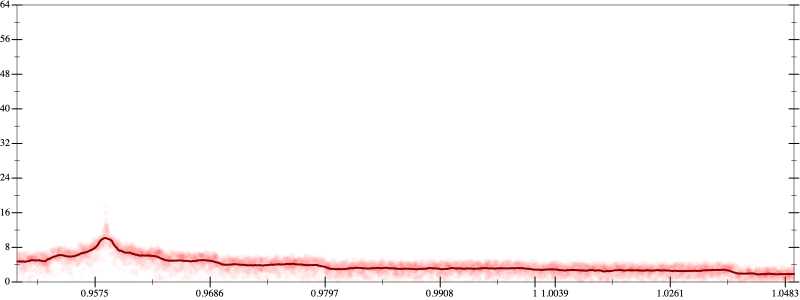
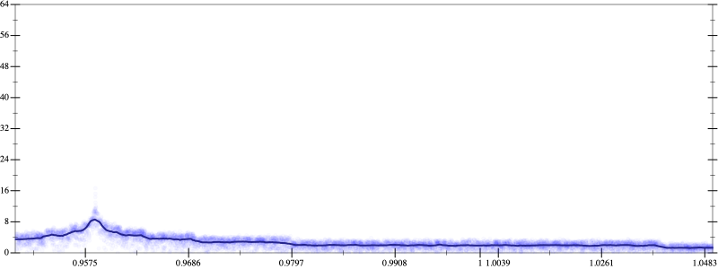
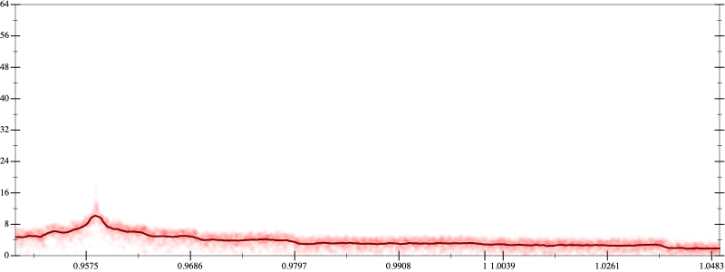
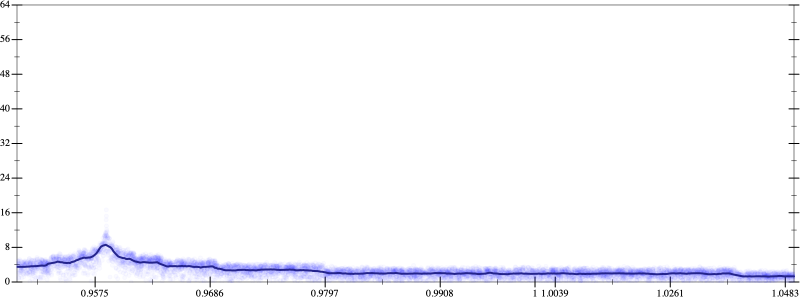

Initial program 3.8
\[\left(120.0 \cdot x + -160.0 \cdot \left(\left(x \cdot x\right) \cdot x\right)\right) + 32.0 \cdot \left(\left(\left(\left(x \cdot x\right) \cdot x\right) \cdot x\right) \cdot x\right)\]
- Using strategy
rm Applied add-log-exp3.8
\[\leadsto \left(120.0 \cdot x + -160.0 \cdot \left(\left(x \cdot x\right) \cdot x\right)\right) + \color{blue}{\log \left(e^{32.0 \cdot \left(\left(\left(\left(x \cdot x\right) \cdot x\right) \cdot x\right) \cdot x\right)}\right)}\]
Applied add-log-exp3.8
\[\leadsto \color{blue}{\log \left(e^{120.0 \cdot x + -160.0 \cdot \left(\left(x \cdot x\right) \cdot x\right)}\right)} + \log \left(e^{32.0 \cdot \left(\left(\left(\left(x \cdot x\right) \cdot x\right) \cdot x\right) \cdot x\right)}\right)\]
Applied sum-log3.8
\[\leadsto \color{blue}{\log \left(e^{120.0 \cdot x + -160.0 \cdot \left(\left(x \cdot x\right) \cdot x\right)} \cdot e^{32.0 \cdot \left(\left(\left(\left(x \cdot x\right) \cdot x\right) \cdot x\right) \cdot x\right)}\right)}\]
Applied simplify3.1
\[\leadsto \log \color{blue}{\left({\left(e^{32.0}\right)}^{\left({x}^{3} \cdot \left(x \cdot x\right)\right)} \cdot \left(e^{120.0 \cdot x} \cdot {\left(e^{-160.0}\right)}^{\left({x}^{3}\right)}\right)\right)}\]
- Using strategy
rm Applied exp-prod2.9
\[\leadsto \log \left({\left(e^{32.0}\right)}^{\left({x}^{3} \cdot \left(x \cdot x\right)\right)} \cdot \left(\color{blue}{{\left(e^{120.0}\right)}^{x}} \cdot {\left(e^{-160.0}\right)}^{\left({x}^{3}\right)}\right)\right)\]
- Using strategy
rm Applied add-cbrt-cube2.9
\[\leadsto \log \left({\left(e^{32.0}\right)}^{\color{blue}{\left(\sqrt[3]{\left(\left({x}^{3} \cdot \left(x \cdot x\right)\right) \cdot \left({x}^{3} \cdot \left(x \cdot x\right)\right)\right) \cdot \left({x}^{3} \cdot \left(x \cdot x\right)\right)}\right)}} \cdot \left({\left(e^{120.0}\right)}^{x} \cdot {\left(e^{-160.0}\right)}^{\left({x}^{3}\right)}\right)\right)\]
Applied simplify2.7
\[\leadsto \log \left({\left(e^{32.0}\right)}^{\left(\sqrt[3]{\color{blue}{{\left({x}^{3}\right)}^{3} \cdot \left({x}^{3} \cdot {x}^{3}\right)}}\right)} \cdot \left({\left(e^{120.0}\right)}^{x} \cdot {\left(e^{-160.0}\right)}^{\left({x}^{3}\right)}\right)\right)\]
- Using strategy
rm Applied add-cube-cbrt2.7
\[\leadsto \log \left({\left(e^{32.0}\right)}^{\left(\sqrt[3]{{\left({x}^{3}\right)}^{3} \cdot \left({x}^{3} \cdot {x}^{3}\right)}\right)} \cdot \left({\left(e^{120.0}\right)}^{x} \cdot {\color{blue}{\left(\left(\sqrt[3]{e^{-160.0}} \cdot \sqrt[3]{e^{-160.0}}\right) \cdot \sqrt[3]{e^{-160.0}}\right)}}^{\left({x}^{3}\right)}\right)\right)\]
Applied unpow-prod-down2.7
\[\leadsto \log \left({\left(e^{32.0}\right)}^{\left(\sqrt[3]{{\left({x}^{3}\right)}^{3} \cdot \left({x}^{3} \cdot {x}^{3}\right)}\right)} \cdot \left({\left(e^{120.0}\right)}^{x} \cdot \color{blue}{\left({\left(\sqrt[3]{e^{-160.0}} \cdot \sqrt[3]{e^{-160.0}}\right)}^{\left({x}^{3}\right)} \cdot {\left(\sqrt[3]{e^{-160.0}}\right)}^{\left({x}^{3}\right)}\right)}\right)\right)\]
 
